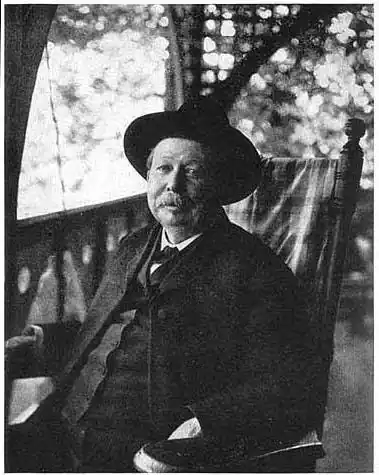
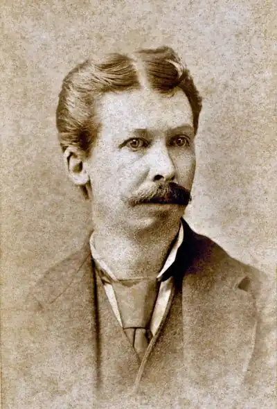

Джоель Чандлер Харріс — відомий американський письменник, творець улюблених дітьми і дорослими "Казок дядечка Римуса".
біографія
9 грудня 1845 року Джоель Чандлер народився в родині сільськогосподарського працівника, вихідця з Ірландії. Дохід сім'ї був вельми скромним. Вже у віці 13 років необхідність заробляти на життя, змусила його залишити будинок і влаштуватися на роботу до Джозефу Тернеру, плантатору, власнику друкарні і видавця газети. Дозвіл користуватися багатою бібліотекою Тернера стало неоціненним внеском у розвиток і освіту майбутнього автора. На плантації йому випала нагода ближче ознайомитися з негритянським фольклором. Саме обробка цих спостережень і принесла йому світову славу. популярність У 1879 році видання "AtlantaConstitution" вперше опублікувало деякі твори, що увійшли пізніше в цикл казок про невтомного братика кролика, а вже в 1880 році був виданий перший збірник казок Джоеля Харріса. За ним в короткі терміни вийшли ще три книги. Джоель Харріс все так же працював журналістом. Поява "Казок дядечка Римуса" викликало хвилю обурення з боку авторів і читачів, що мають різні переконання. Так, багато хто стверджував, що єдина заслуга Харріса в тому, що він переписав негритянські розповіді. Інші ж дорікали письменника в спробах виправдати рабовласництво. Чорношкірі автори в свою чергу були обурені посяганням на їх культуру. Проте, сучасні історики, як Джуліус Лестер, відзначають великий внесок Харріса в створення літературної традиції записи південного фольклору. Його твори дозволяють і сьогодні почути негритянську мова в тому вигляді, в якому чув її сам автор. смерть 3 липня 1908 року Джоель Харріс помер у місті Атланта. "Казки дядечка Римуса" російською мовою вийшли в 1936 році і були безліч разів перевидані.